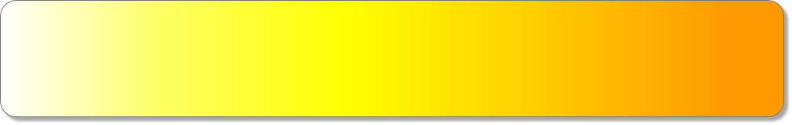

Застройка территории

Информация о Кремле
Застройка территории
Фотографии
Информация для связи с разработчиком

Мобильный телефон:
8-920-295-80-52
gnester@mail.ru
или
gnester95@gmail.com
Рабочий email:


© 2014 Кремль в Н.Новгороде
Сайт разработан студентом 1 курса НГТУ Им. Р.Е.Алексеева
Нестеренко Евгением Андреевичем
Подписаться на рассылку
Как вы уже наверняка поняли, в самом Кремле было много других сооружений. Естественно, там были элитные хоромы князя и его семьи. Немало было и храмов. Впрочем, почти все из них были чуть менее, чем полностью уничтожены красногвардейцами, и восстанавливать религиозные сооружения начали сравнительно недавно. Однако многое было и построено внутри Кремля: здание Дома Советов, казармы, правительственные корпуса, художественный музей, филармония и многое-многое другое.
На данный момент в Кремле сохранились и тщательно охраняются следующие постройки и исторические объекты:
• Михайло-Архангельский собор (XVI век) – самое древнее из всех кремлевских зданий. Именно здесь захоронен прах Козьмы Минина.
• Обелиск и памятник Минину и Пожарскому
• Памятник основателю Георгию и святителю Симону
• Мемориальный Вечный Огонь
• Губернаторский дом (ныне – Художественный музей)
• Оружейный арсенал (ныне – Государственный центр современного искусства «Арсенал»)
• Аллея славы – аллея, начинающаяся от Дмитриевской Башни Кремля, на которой установлены транспорт и орудия времен II Мировой
• Большой Колокол – установлен за стенами Кремля, напротив Часовой Башни, рядом с оврагом, по которому в начале XX века ходили фуникулеры. Попасть к колоколу можно через арку в стене кремля.
Кроме того, открыты для посещения и сами стены Нижегородского Кремля – попасть туда можно за символическую плату через Дмитриевскую Башню. Подобная прогулка – один из 12 вариантов увлекательных прогулок по Нижнему Новгороду.
И, разумеется, на территории Кремля расположен ряд административных правительственных зданий, в том числе и Нижегородский Арбитражный суд. С 2008 года по настоящее время реставрируется здание бывших присутственных мест, предназначенное для правительства Нижегородской области, однако, в связи с кризисом, оно до сих пор не завершено.